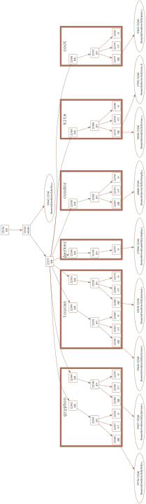
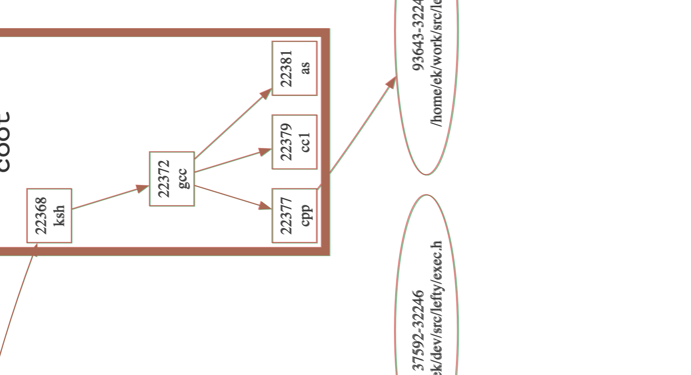
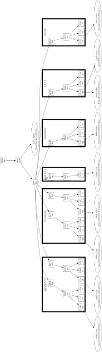
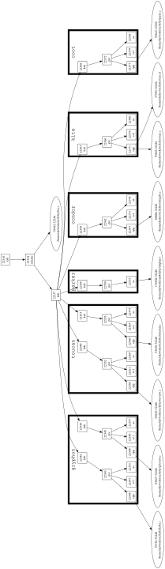

Accepted delta — structural-match.
proc3d (graphs-proc3d / share-proc3d /
windows-proc3d) is the canonical
A2 font-metric case: a sub-pixel
text-measurement difference shifts node x-positions by a few points, and the
graph stays structural-match.
digraph g {
graph [
fontname=Courier,
fontsize=24,
ranksep = 1.0,
size="10,7.5",
orientation=land,
style="setlinewidth(8)"
page = "8.5,11",
center=true
];
node [
shape = "box"
width = "0.5"
];
edge [
];
subgraph cluster_0 {
label="gryphon"
"22342"
"22343"
"22346"
"22347"
"22351"
"22344"
"22345"
"22348"
"22350"
"22357"
}
subgraph cluster_1 {
label=toucan
"22349"
"22352"
"22356"
"22361"
"22369"
"22353"
"22355"
"22360"
"22365"
"22374"
}
subgraph cluster_2 {
label=parker
"22354"
"22359"
"22375"
}
subgraph cluster_3 {
label=condor
"22358"
"22362"
"22367"
"22373"
"22378"
}
subgraph cluster_4 {
label=kite
"22363"
"22366"
"22371"
"22376"
"22380"
}
subgraph cluster_5 {
label=coot
"22368"
"22372"
"22377"
"22379"
"22381"
}
"22316" [
label = "22316\nksh"
pname = "ksh"
kind = "proc"
];
"22324" [
label = "22324\nnmake"
pname = "nmake"
kind = "proc"
];
"22337" [
label = "22337\nksh"
pname = "ksh"
kind = "proc"
];
"22342" [
label = "22342\nksh"
pname = "ksh"
kind = "proc"
];
"22343" [
label = "22343\ngcc"
pname = "gcc"
kind = "proc"
];
"22344" [
label = "22344\nksh"
pname = "ksh"
kind = "proc"
];
"22345" [
label = "22345\ngcc"
pname = "gcc"
kind = "proc"
];
"22346" [
label = "22346\ncpp"
pname = "cpp"
kind = "proc"
];
"22347" [
label = "22347\ncc1"
pname = "cc1"
kind = "proc"
];
"22348" [
label = "22348\ncpp"
pname = "cpp"
kind = "proc"
];
"93736-32246" [
label = "93736-32246\n/home/ek/work/src/lefty/lefty.c"
fname = "/home/ek/work/src/lefty/lefty.c"
shape = "ellipse"
kind = "file"
];
"22349" [
label = "22349\nksh"
pname = "ksh"
kind = "proc"
];
"22350" [
label = "22350\ncc1"
pname = "cc1"
kind = "proc"
];
"93627-32246" [
label = "93627-32246\n/home/ek/work/src/lefty/gfxview.c"
fname = "/home/ek/work/src/lefty/gfxview.c"
shape = "ellipse"
kind = "file"
];
"22351" [
label = "22351\nas"
pname = "as"
kind = "proc"
];
"22352" [
label = "22352\ngcc"
pname = "gcc"
kind = "proc"
];
"22353" [
label = "22353\nksh"
pname = "ksh"
kind = "proc"
];
"22354" [
label = "22354\nksh"
pname = "ksh"
kind = "proc"
];
"22355" [
label = "22355\ngcc"
pname = "gcc"
kind = "proc"
];
"22356" [
label = "22356\ncpp"
pname = "cpp"
kind = "proc"
];
"22357" [
label = "22357\nas"
pname = "as"
kind = "proc"
];
"22358" [
label = "22358\nksh"
pname = "ksh"
kind = "proc"
];
"22359" [
label = "22359\ngcc"
pname = "gcc"
kind = "proc"
];
"22360" [
label = "22360\ncpp"
pname = "cpp"
kind = "proc"
];
"22361" [
label = "22361\ncc1"
pname = "cc1"
kind = "proc"
];
"93645-32246" [
label = "93645-32246\n/home/ek/work/src/lefty/txtview.c"
fname = "/home/ek/work/src/lefty/txtview.c"
shape = "ellipse"
kind = "file"
];
"22362" [
label = "22362\ngcc"
pname = "gcc"
kind = "proc"
];
"22363" [
label = "22363\nksh"
pname = "ksh"
kind = "proc"
];
"22365" [
label = "22365\ncc1"
pname = "cc1"
kind = "proc"
];
"22366" [
label = "22366\ngcc"
pname = "gcc"
kind = "proc"
];
"93638-32246" [
label = "93638-32246\n/home/ek/work/src/lefty/internal.c"
fname = "/home/ek/work/src/lefty/internal.c"
shape = "ellipse"
kind = "file"
];
"22367" [
label = "22367\ncpp"
pname = "cpp"
kind = "proc"
];
"22368" [
label = "22368\nksh"
pname = "ksh"
kind = "proc"
];
"22369" [
label = "22369\nas"
pname = "as"
kind = "proc"
];
"93642-32246" [
label = "93642-32246\n/home/ek/work/src/lefty/lex.c"
fname = "/home/ek/work/src/lefty/lex.c"
shape = "ellipse"
kind = "file"
];
"22371" [
label = "22371\ncpp"
pname = "cpp"
kind = "proc"
];
"22372" [
label = "22372\ngcc"
pname = "gcc"
kind = "proc"
];
"22373" [
label = "22373\ncc1"
pname = "cc1"
kind = "proc"
];
"88860-32246" [
label = "88860-32246\n/home/ek/dev/src/lefty/stringify.c"
fname = "/home/ek/dev/src/lefty/stringify.c"
shape = "ellipse"
kind = "file"
];
"22374" [
label = "22374\nas"
pname = "as"
kind = "proc"
];
"22375" [
label = "22375\nas"
pname = "as"
kind = "proc"
];
"22376" [
label = "22376\ncc1"
pname = "cc1"
kind = "proc"
];
"93626-32246" [
label = "93626-32246\n/home/ek/work/src/lefty/exec.c"
fname = "/home/ek/work/src/lefty/exec.c"
shape = "ellipse"
kind = "file"
];
"22377" [
label = "22377\ncpp"
pname = "cpp"
kind = "proc"
];
"22378" [
label = "22378\nas"
pname = "as"
kind = "proc"
];
"22379" [
label = "22379\ncc1"
pname = "cc1"
kind = "proc"
];
"93643-32246" [
label = "93643-32246\n/home/ek/work/src/lefty/parse.c"
fname = "/home/ek/work/src/lefty/parse.c"
shape = "ellipse"
kind = "file"
];
"22380" [
label = "22380\nas"
pname = "as"
kind = "proc"
];
"22381" [
label = "22381\nas"
pname = "as"
kind = "proc"
];
"37592-32246" [
label = "37592-32246\n/home/ek/dev/src/lefty/exec.h"
fname = "/home/ek/dev/src/lefty/exec.h"
shape = "ellipse"
kind = "file"
];
"135504-32246" [
label = "135504-32246\n/home/ek/work/sun4/lefty/display.o"
fname = "/home/ek/work/sun4/lefty/display.o"
shape = "ellipse"
kind = "file"
];
"22316" -> "22324" [
];
"22324" -> "22337" [
];
"22337" -> "22342" [
];
"22342" -> "22343" [
];
"22337" -> "22344" [
];
"22344" -> "22345" [
];
"22343" -> "22346" [
];
"22343" -> "22347" [
];
"22345" -> "22348" [
];
"22346" -> "93736-32246" [
];
"22337" -> "22349" [
];
"22345" -> "22350" [
];
"22348" -> "93627-32246" [
];
"22343" -> "22351" [
];
"22349" -> "22352" [
];
"22337" -> "22353" [
];
"22337" -> "22354" [
];
"22353" -> "22355" [
];
"22352" -> "22356" [
];
"22345" -> "22357" [
];
"22337" -> "22358" [
];
"22354" -> "22359" [
];
"22355" -> "22360" [
];
"22352" -> "22361" [
];
"22356" -> "93645-32246" [
];
"22358" -> "22362" [
];
"22337" -> "22363" [
];
"22355" -> "22365" [
];
"22363" -> "22366" [
];
"22360" -> "93638-32246" [
];
"22362" -> "22367" [
];
"22337" -> "22368" [
];
"22352" -> "22369" [
];
"22324" -> "93642-32246" [
];
"22366" -> "22371" [
];
"22368" -> "22372" [
];
"22362" -> "22373" [
];
"22367" -> "88860-32246" [
];
"22355" -> "22374" [
];
"22359" -> "22375" [
];
"22366" -> "22376" [
];
"22371" -> "93626-32246" [
];
"22372" -> "22377" [
];
"22362" -> "22378" [
];
"22372" -> "22379" [
];
"22377" -> "93643-32246" [
];
"22366" -> "22380" [
];
"22372" -> "22381" [
];
"22371" -> "37592-32246" [
];
"22375" -> "135504-32246" [
];
/* hack to increase node separation */
{ rank = same; "22337" -> "93642-32246" [style=invis,minlen=10]; }
}
The x-network-simplex layout is faithful; the only difference is that the
port's font measurer reports some wide labels a fraction of a
point wider than FreeType. proc3d's widest labels are the file-path ovals — e.g.
/home/ek/work/src/lefty/lefty.c, the exact string
known-divergences.md §A2 measures at +0.75 pt
(+0.43%). A wider label makes a slightly wider node, whose half-width
feeds the ROUND()-ed left-to-right separation constraints; the
network simplex then picks a marginally different (equally optimal) integer
x-assignment. The result is a near-uniform ≤3.55 pt x-shift
over a ~2620 pt drawing — rank, order, topology and y-coordinates identical.
Golden (green) and ours (red) superimposed in the same frame. At full scale they blend to brown — the shift is sub-perceptual (hence structural-match).


Zoomed, the green/red fringe appears almost entirely on the long file-path oval labels — exactly the wide strings the measurer over-measures. The code/box nodes stay coincident.


| metric | value |
|---|---|
| verdict | structural-match |
| maxDelta (port vs native) | 3.55 pt |
| labels shifted in x | 73 / 73 (near-uniform) |
| drawing x-extent | ~2620 pt → shift is 0.13% |
| rank / order / topology / y | identical to C |
Reproduce: GVBINDIR=/tmp/gvplugins npx tsx test/corpus/render-one.ts ~/git/graphviz/tests/graphs/proc3d.gv dot
vs … build/cmd/dot/dot -Tsvg …/proc3d.gv.